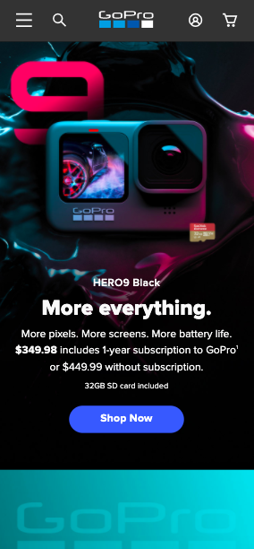
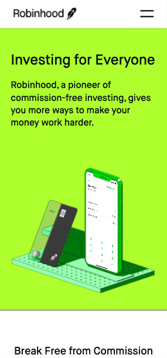

White Space
Duolingo
Duolingo is a great example of using white space and maintaining a clean design. The white space emphasizes the message and the buttons on the page, making the purpose of the website clear to the user. Just by looking at it it’s possible to say that the message is to learn a new language and that you can create an account to use its benefits.
Alignment
GoPro

Analyzing GoPro’s website, it is noticeable that the elements are center align. Starting with the logo on the top and going through the pictures, text elements and buttons, all of them have the same center alignment. Using this principle helps the user connect the elements and gives an organized look to the page.
Contrast
Robinhood

Contrast is one example that is found on Robinhood. The website uses strong colors and simple designs to help the contrast stand out. Green, which is the brand’s color contrasts with the black font, which also contrasts with white applications.